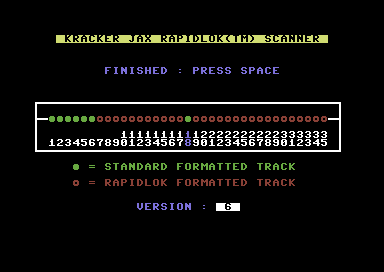
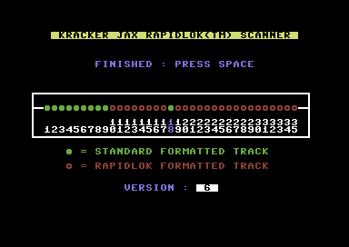
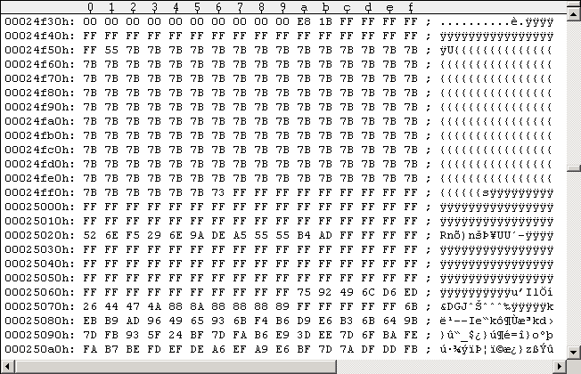
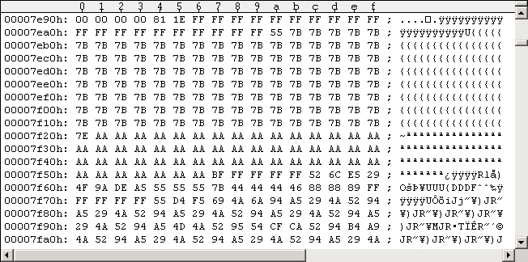
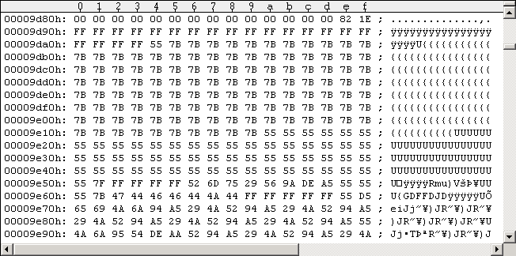
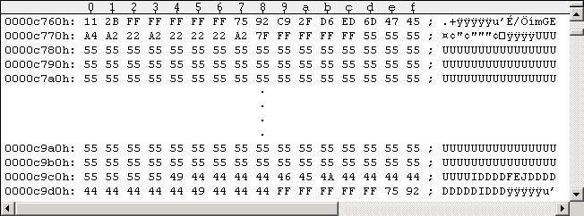
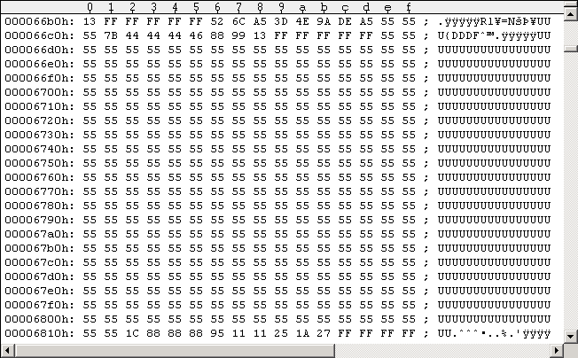

Main IndexTracks 1-35 details
The book "Kracker Jax Revealed Trilogy" gives a nice oversight on how RapidLok tracks are organized. As pictures say more than 1000 words I decided to visualize this using "screenshots" of some chosen tracks inside a G64 image of my Microprose Pirates PAL disk side 1. Figures #1+#2 below give a nice overview of the protection status of all (data) tracks on a RapidLok protected disk. The name of the tool is "RapidLok Scanner" for C64, and it's included on the disks "Bullseye", "Kracker Jax REVEALED TRILOGY VOL 1-2", "RapidLok Utilities".

Figures #1+#2: Pirates G64 images scans. Left: side 1, right: side 2.Obviously we have two types of tracks: Standard (DOS) formatted tracks (marked green) and RapidLok formatted ones (marked red). "Version: 6" means it's RapidLok6. RapidLok formatted tracks RapidLok formatted tracks 1-17 have 12 data sectors, read at bit rate "11 = 307692 Bit/s". RapidLok formatted Tracks 19-35 have 11 data sectors, read at bit rate "10 = 285714 Bit/s". The following Figure #3 shows the typical header of a RapidLok formatted Track ($1BE8 is track length). It starts with $14 bytes Sync mark (20x$FF) at $24F3C, followed by the $7B "Extra sector" (starting with a $55 byte; number of bytes (mostly $7B's) must match the corresponding Track Key retrieved from the Track 36 Key Sector). Then a $29 Sync mark introduces the 12-byte "DOS Reference header", which is actually a valid $52 DOS sector header. Directly following is the first RapidLok data sector. Each RapidLok data sector consists of a header and the actual sector data, both preceded by Sync marks of 5 bytes length - except the Track's first data sector after the "DOS Reference header" having a $3E bytes long Sync mark (62x$FF) before the header. Data sector headers start with $75, the following header byte values are irrelevant for RapidLok. The data blocks start with $6B and are about $255 bytes long (only first 3-4 lines of the $6B data sector are shown in Figure #3 below, rest is omitted to keep the figure small). All $6B data sectors have an embedded parity byte, so we'll notice when a disk has bad sectors. Keep in mind that all given byte lengths here may slightly vary from dump to dump and disk to disk. And don't worry about the "$73" byte at offset $24FF6 in Figure #3 below, such things may also happen. RapidLok routines use tolerances.

Figure #3: RapidLok Track Header (Track 20).Standard (DOS) formatted tracks There are also tracks containing sectors in the usual standard DOS format on a RapidLok protected disk. Those tracks have the usual number of standard (DOS) sectors and are read with the usual standard (DOS) bit rates. There are no tracks containing both standard (DOS) and RapidLok sectors. All those tracks simply start with a $14 bytes long Sync mark (20x$FF) followed by a $7B "Extra sector" which is slightly different from the one described above. This "Extra sector" starts with a $55 byte, followed by a number of $7Bs and ends with a number of $AAs/$55s. The length of this "Extra sector" is not checked against the corresponding Track 36 Keys. The $52 "DOS reference sector" with its surrounding long Sync marks is missing in DOS formatted tracks (as each DOS sector has such a reference header). The following Figures #4 and #5 show the track header on standard (DOS) formatted tracks (the tools NIBREAD/NIBCONV seem to like positioning them at the end of each Track - so I moved them to the start right after the G64 Track length number for your convenience here).

Figure #4: Track header of standard DOS formatted Track (Track 5) - Type A.
Figure #5: Track header of standard DOS formatted Track (Track 6) - Type B.Empty sectors As on all standard DOS formatted disks there may be empty sectors on a RapidLok protected disk as well. There are two types of them on RapidLok protected disks: Empty sectors on a RapidLok formatted Track (see Figure #6) and empty sectors on a standard DOS formatted Track (see Figure #7). Empty RapidLok sectors are simply "$6B data blocks" with only $55-bytes in them (slightly different length: about $25C bytes). Empty standard DOS sectors are filled with $55-bytes (GCR) as well, have a correct standard header but the first GCR bytes of the data block do not decode to $07 ("Data descriptor byte" / data block ID). This is the reason here why NIBREAD outputs "code 4" sector errors to the console.

Figure #6: Empty RapidLok sector (Track 7).
Figure #7: Empty standard DOS sector (Track 4).As far as I have seen, $7B "Extra sectors" (with their long Sync marks) can be removed without problems from standard (DOS) formatted tracks (even from Directory Track 18).